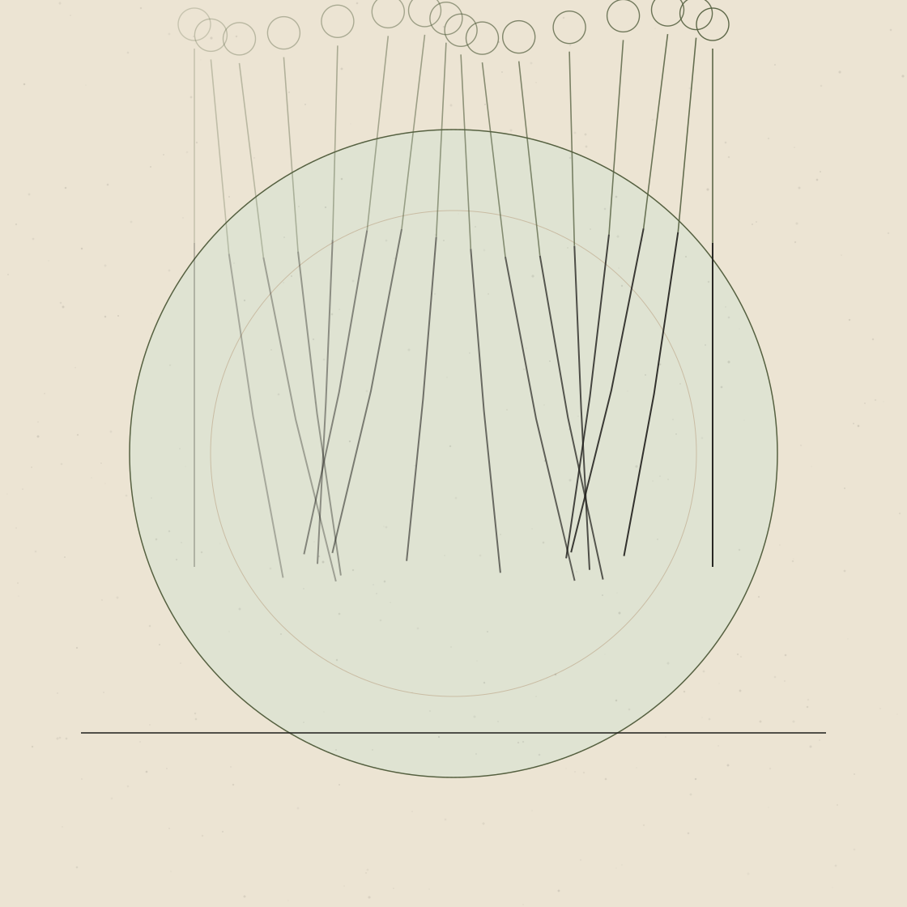

Understand Your Body.Explore Your Mind.Live Better.
Evidence-informed health education on movement, neuroscience, nutrition and the science of everyday wellbeing.

Six areas of inquiry
From pain science to metabolism, each topic is approached with the same care for evidence.
Physiotherapy & Movement
Pain science, mobility, strength and the science of how bodies move.
Explore 02Neuroscience & Behaviour
How the brain learns, adapts, reacts to stress and shapes behaviour.
Explore 03Nutrition & Metabolic Health
Food, energy and metabolism — without the myths or the moralising.
Explore 04Women's Health
Careful, evidence-informed writing on women's bodies across the lifespan.
Explore 05Prevention, Recovery & Longevity
Resilience, recovery and the habits that support long-term wellbeing.
Explore 06Science Explained
How to read research, weigh claims and think clearly about evidence.
ExploreLatest writing
Browse the archiveHow we talk about evidence
Not all findings are equally certain. Articles label key claims so you can see how confident to be.
Consistent findings
Backed by a substantial, consistent body of good-quality research, often summarised in systematic reviews or reflected in major guidelines.
Promising, not settled
Some supporting evidence, but studies are limited, inconsistent, observational or not yet replicated in people like you.
Plausible ideas
Reasonable hypotheses, mechanisms or common practice without strong direct evidence yet. Worth discussing, not worth overstating.

Written by a physiotherapist who is curious about everything the body touches.
“Good health information should leave you clearer and calmer — not more anxious, and not sold to.”
The Movement Mind is written by [Your Name], a physiotherapist with a master’s degree in advanced physiotherapy and a musculoskeletal focus. Clinical training in movement and pain sparked a wider curiosity — about the brain, nutrition, metabolism, women’s health and human behaviour.
This publication exists to translate that science into clear, honest explanations for everyday readers.
More about the publicationReading & resources
Practical guides to help you read health information well. More resources will be added over time.
Start here
An eight-question checklist for weighing any health claim you see online.
Guide ii.How we handle evidence
Our editorial standards, evidence labels and corrections policy.
Standards iii.Browse by topic
Six areas of inquiry, from pain science to metabolic health.
TopicsDownloadable guides & book notes
Printable explainers and honest book recommendations are planned.
Coming later